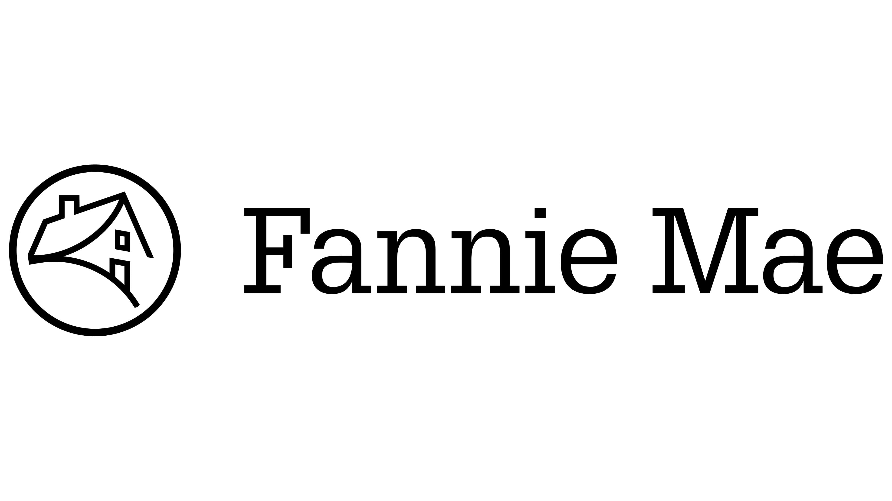

Parsa Teymourlouei
Senior Computer Science Student | University of Maryland, College Park
parsa.teymourlouei1@gmail.com | (443) 221-8651
Senior Computer Science Student | University of Maryland, College Park
parsa.teymourlouei1@gmail.com | (443) 221-8651
I'm a senior Computer Science student at the University of Maryland with a passion for building scalable software and cloud-based systems. Whether I'm developing distributed backend services, designing cloud infrastructure on AWS, or creating personal projects from scratch, I enjoy solving complex technical problems and continuously learning new technologies.
Through my internship at Fannie Mae and personal software projects, I've gained experience building production cloud applications, collaborating with engineering teams, and designing scalable backend systems. These experiences have strengthened my technical abilities along with my communication, problem-solving, adaptability, and teamwork skills.
Beyond technology, I enjoy learning about new ideas, working out, golfing, and spending time with family. These interests help keep me balanced while motivating me to continue growing personally and professionally.
University of Maryland, College Park
Major: Computer Science
Minor: Technology Entrepreneurship & Corporate Innovation
Expected Graduation: May 2027
Activities: Campus Coders Crew, Google Developer Student Club, Claude Builder Club, and Real Estate Club
Languages: Python, Java, C, JavaScript, SQL, HTML, and CSS
Frameworks & Libraries: React, Node.js, Vue.js, Pandas, Tkinter, and boto3
Cloud & Infrastructure: AWS ECS, Lambda, Athena, CloudFormation, EventBridge, DynamoDB, S3, SQS, IAM, CloudWatch, and AWS Config
Developer Tools: Git, GitHub, Linux, Unix, Jira, and Figma

June 2026 – August 2026
As part of Fannie Mae’s Cloud Infrastructure division and Software Defined Networking team, I contributed to an over-permissive risk reduction project, which analyzes hundreds of AWS VPC Flow Log records to support cloud security remediation.
Developed Python components for an autoscaling ECS-based processing pipeline and deployed AWS infrastructure through automated CI/CD pipelines using services including Lambda, Athena, DynamoDB, AWS Config, EventBridge, SQS, and CloudWatch.
Designed reusable processing components, centralized CloudWatch metrics, and a two-level caching architecture that reduced repeated AWS Config lookups and improved the platform’s scalability, maintainability, and observability.

May 2025 – Present
As a developer with Campus Coders Crew, I collaborate with a team of student developers to design and build full-stack applications for organizations throughout the University of Maryland community.
I contribute to application design, implementation, debugging, testing, and code reviews while gaining hands-on experience with collaborative software development practices.

August 2025
An AI-powered desktop application that connects startups with relevant investors based on industry, stage, geography, and investment fit.
Built with Python, Pandas, Tkinter, and Cohere’s NLP reranking API, the application processes investor data and generates ranked recommendations to help founders improve their outreach strategies.

June 2025
A Python productivity application designed to simplify student task management through automatic organization and Canvas LMS integration.
SmartTask synchronizes assignments and deadlines while offering task creation, one-click editing, priority organization, and a clean, color-coded interface.

July 2025
A foundational AWS certification demonstrating knowledge of cloud concepts, architecture, security, billing, and core AWS services.

June 2025
A certificate from the Robert H. Smith School of Business covering responsible AI, modern AI systems, business applications, career development, negotiation, and entrepreneurship.

August 2025
An introductory course covering exploratory data analysis, visualization, hypothesis testing, business analytics, and tools such as Tableau.

Click to view my resume
Feel free to reach out regarding opportunities or collaborations.